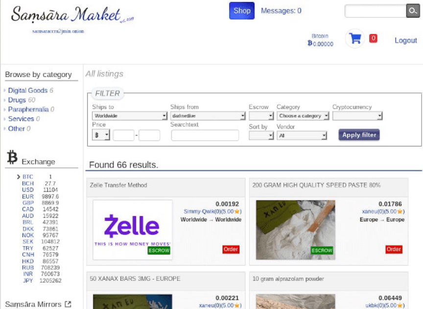
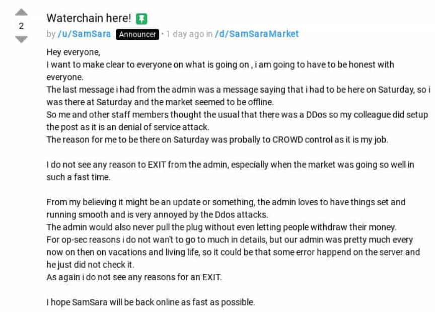
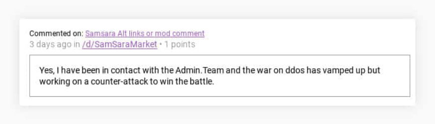
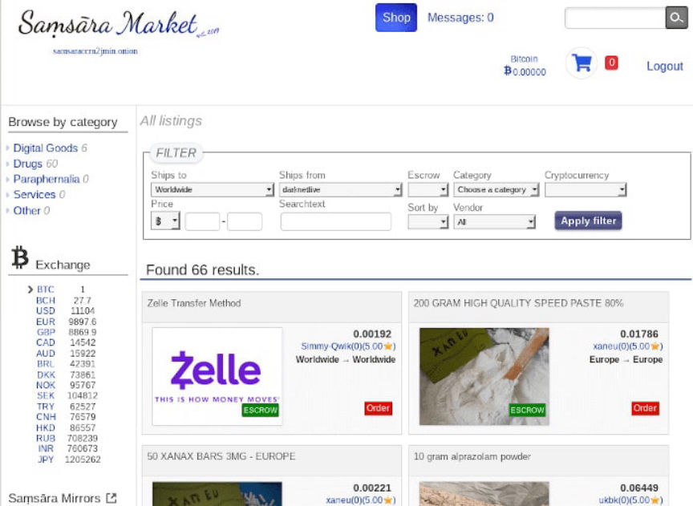
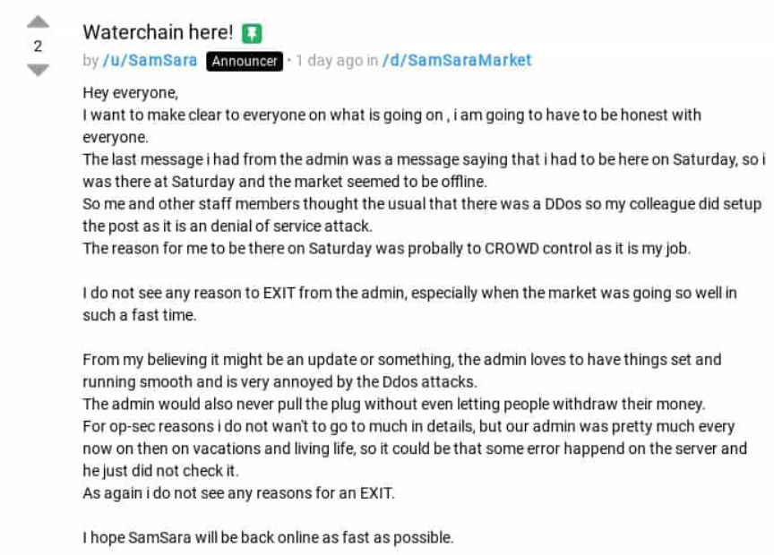
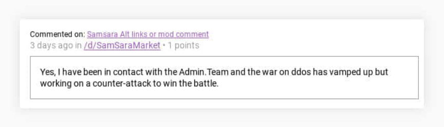

The Admin of SamSara Market is Gone
SamSara Market, the official yet unofficial successor to Dream Market, has been down for several days without any explanation from the market’s administration. The administrator of the market has been keeping the staff in the dark as well, according to a recent post by one of the market’s most senior staff members.
Although the unexpected downtime of SamSara Market was initially blamed on a denial of service attack, staff members have now changed their statements. They have no reasonable explanation for the downtime or for the suspicious disappearance of the marketplace’s administrator. Market staff are now approaching on two weeks without hearing a word from their employer on the marketplace.<h2 id="the-timeline">The Timeline </h2>November 9
On November 9, the “Announcer” account for SamSara Market, /u/SamSara, blamed the downtime on a “heavy denial-of-service attack.”
Dear users,
We are currently under a heavy denial-of-service attack.
The market will be backup running any time soon.
We apologize for the downtime.
Best regards,
-Team SamSara.
At the time, the given explanation made some sense; the market has been struggling under the weight of an ongoing denial-of-service attack for months. It frequently timed out in the middle of sessions. Users saw the messages from staff on the SamSara homepage that often contained information about the denial of service attack and the implementation of countermeasures. For the casual user, perhaps the November 9 explanation made sense.
Darknetlive stopped receiving messages from the administrator approximately one month ago. Others on Dread seem to have experienced something similar. Waterchain explained that the administrator had not been arrested and that he simply had no free time. This is a point he reiterated in the most recent post on Dread.November 12
On November 12, the SamSara account on Dread posted the following message (emphasis added):
Hey everyone,
I want to make clear to everyone on what is going on , i am going to have to be honest with everyone.<br>The last message i had from the admin was a message saying that i had to be here on Saturday, so i was there at Saturday and the market seemed to be offline.<br>So me and other staff members thought the usual that there was a DDos so my colleague did setup the post as it is an denial of service attack.<br>The reason for me to be there on Saturday was probably to CROWD control as it is my job.<br>I do not see any reason to EXIT from the admin, especially when the market was going so well in such a fast time.<br>From my believing it might be an update or something, the admin loves to have things set and running smooth and is very annoyed by the Ddos attacks.<br>The admin would also never pull the plug without even letting people withdraw their money.<br>For op-sec reasons i do not wan’t to go to much in details, but our admin was pretty much every now on then on vacations and living life, so it could be that some error happened on the server and he just did not check it.<br>As again i do not see any reasons for an EXIT.<br>I hope SamSara will be back online as fast as possible.

In short: the market administrator had apparently instructed the operator of the /u/SamSara account to be online on November 9. On November 9, SamSara staff noticed that the market was down and that the administrator had stopped responding to their messages. The staff, believing the admin had wanted them online to work in a PR capacity, posted the November 9 message on their own.November 12 Pt. 2
On the same day that /u/SamSara posted the above message, the “General Support” account “/u/BlueSamSara” posted a somewhat contradictory message on on Dread about the status of the administrator. It is unlikely that BlueSamSara is in contact with the administrator and not the senior member of the staff.
Throw your rotten tomatoes or whatever you’d like at me when I ask to have a little more patience and unfortunately that’s all I am at liberty to say.

Waterchain, in response to a request from Darknetlive, provided the following statement:
We believe, as moderators, that the server has been turned off. We also believe the admin was very upset due to the ddos again, there was an easy way to figure it out by using “rotating mirrors” as a temporary solution, but the admin kept refusing to use them.
Many people believe my colleague Alexei has disappeared. I can tell you that he was around during that time (messaging me) even though he kept ignoring people. I was told on Friday (November 1) to be online on Saturday. So I kept waiting and waiting and the next week exactly on a Saturday the server shut off.
The whole ‘shutdown’ does not make any sense at all, but I do not believe the admin has been arrested. The admin is one of the smartest guys around and i respect him for who he is.
The statistics were rising we had tons of users and everything went well. There were a lot of new moderators in the line ready to jump in.
I hope the market will be back up any time soon so we can resume everything and hopes it goes smooth. Furthermore i have no information about the shutdown.
The last time I spoke to Alexei was within the last 14 days.
<h2 id="ongoing-status">Ongoing Status </h2>
There is no point in warning users to stay away from the market as the market is clearly inaccessible. Very few people likely expect the market to return at this point. The return of a market after more than a day of unplanned downtime is more than statistically unlikely. The disappearance the only person capable of bringing the market back online makes the return even more unlikely.
On Dread, some users have proposed a theory involving the CyberBunker raid. It took place around the same time that Alexei stopped replying to messages from anyone but market staff. Waterchain’s statement revealing that he had last heard from Alexei “within the last 14 days” contradicts the theory (assuming Waterchain was not unknowingly talking with undercover law enforcement officers).
Waterchain posted a comment about the date the server went down.
It could be very well that the server cost are not paid, why ? the launch was on the 7th of a month and the server went offline at 8th.
Technically on the 4th but those could have been client sided edits without it being hosted on a server yet , i got invited on the 7TH.
One of the most reasonable explanations yet. It still does not explain why. Did the administrator intentionally ignore the market or is something preventing him from paying for the servers. It also seems unlikely that the administrator of such a popular market would have paid enough to host the market for a couple of months. Did he plan on dropping off the face of the earth only five months after launch?
This post is open ended. Waterchain might have something to say about the ordeal on Sunday if the market has not returned by then. Feel free to post your wild speculations because at this point there is no better information. Of course, the simplest answer is that the administrator exit scammed with a young market.
Although the unexpected downtime of SamSara Market was initially blamed on a denial of service attack, staff members have now changed their statements. They have no reasonable explanation for the downtime or for the suspicious disappearance of the marketplace’s administrator. Market staff are now approaching on two weeks without hearing a word from their employer on the marketplace.<h2 id="the-timeline">The Timeline </h2>November 9
On November 9, the “Announcer” account for SamSara Market, /u/SamSara, blamed the downtime on a “heavy denial-of-service attack.”
Dear users,
We are currently under a heavy denial-of-service attack.
The market will be backup running any time soon.
We apologize for the downtime.
Best regards,
-Team SamSara.
At the time, the given explanation made some sense; the market has been struggling under the weight of an ongoing denial-of-service attack for months. It frequently timed out in the middle of sessions. Users saw the messages from staff on the SamSara homepage that often contained information about the denial of service attack and the implementation of countermeasures. For the casual user, perhaps the November 9 explanation made sense.
The SamSara Market Homescreen
Darknetlive stopped receiving messages from the administrator approximately one month ago. Others on Dread seem to have experienced something similar. Waterchain explained that the administrator had not been arrested and that he simply had no free time. This is a point he reiterated in the most recent post on Dread.November 12
On November 12, the SamSara account on Dread posted the following message (emphasis added):
Hey everyone,
I want to make clear to everyone on what is going on , i am going to have to be honest with everyone.<br>The last message i had from the admin was a message saying that i had to be here on Saturday, so i was there at Saturday and the market seemed to be offline.<br>So me and other staff members thought the usual that there was a DDos so my colleague did setup the post as it is an denial of service attack.<br>The reason for me to be there on Saturday was probably to CROWD control as it is my job.<br>I do not see any reason to EXIT from the admin, especially when the market was going so well in such a fast time.<br>From my believing it might be an update or something, the admin loves to have things set and running smooth and is very annoyed by the Ddos attacks.<br>The admin would also never pull the plug without even letting people withdraw their money.<br>For op-sec reasons i do not wan’t to go to much in details, but our admin was pretty much every now on then on vacations and living life, so it could be that some error happened on the server and he just did not check it.<br>As again i do not see any reasons for an EXIT.<br>I hope SamSara will be back online as fast as possible.

A Post by Waterchain on Dread
In short: the market administrator had apparently instructed the operator of the /u/SamSara account to be online on November 9. On November 9, SamSara staff noticed that the market was down and that the administrator had stopped responding to their messages. The staff, believing the admin had wanted them online to work in a PR capacity, posted the November 9 message on their own.November 12 Pt. 2
On the same day that /u/SamSara posted the above message, the “General Support” account “/u/BlueSamSara” posted a somewhat contradictory message on on Dread about the status of the administrator. It is unlikely that BlueSamSara is in contact with the administrator and not the senior member of the staff.
Throw your rotten tomatoes or whatever you’d like at me when I ask to have a little more patience and unfortunately that’s all I am at liberty to say.

A SamSara Staffer Defending the Market
November 14Waterchain, in response to a request from Darknetlive, provided the following statement:
We believe, as moderators, that the server has been turned off. We also believe the admin was very upset due to the ddos again, there was an easy way to figure it out by using “rotating mirrors” as a temporary solution, but the admin kept refusing to use them.
Many people believe my colleague Alexei has disappeared. I can tell you that he was around during that time (messaging me) even though he kept ignoring people. I was told on Friday (November 1) to be online on Saturday. So I kept waiting and waiting and the next week exactly on a Saturday the server shut off.
The whole ‘shutdown’ does not make any sense at all, but I do not believe the admin has been arrested. The admin is one of the smartest guys around and i respect him for who he is.
The statistics were rising we had tons of users and everything went well. There were a lot of new moderators in the line ready to jump in.
I hope the market will be back up any time soon so we can resume everything and hopes it goes smooth. Furthermore i have no information about the shutdown.
The last time I spoke to Alexei was within the last 14 days.
<h2 id="ongoing-status">Ongoing Status </h2>
There is no point in warning users to stay away from the market as the market is clearly inaccessible. Very few people likely expect the market to return at this point. The return of a market after more than a day of unplanned downtime is more than statistically unlikely. The disappearance the only person capable of bringing the market back online makes the return even more unlikely.
On Dread, some users have proposed a theory involving the CyberBunker raid. It took place around the same time that Alexei stopped replying to messages from anyone but market staff. Waterchain’s statement revealing that he had last heard from Alexei “within the last 14 days” contradicts the theory (assuming Waterchain was not unknowingly talking with undercover law enforcement officers).
The CyberBunker Seizure Page
Waterchain posted a comment about the date the server went down.
It could be very well that the server cost are not paid, why ? the launch was on the 7th of a month and the server went offline at 8th.
Technically on the 4th but those could have been client sided edits without it being hosted on a server yet , i got invited on the 7TH.
One of the most reasonable explanations yet. It still does not explain why. Did the administrator intentionally ignore the market or is something preventing him from paying for the servers. It also seems unlikely that the administrator of such a popular market would have paid enough to host the market for a couple of months. Did he plan on dropping off the face of the earth only five months after launch?
This post is open ended. Waterchain might have something to say about the ordeal on Sunday if the market has not returned by then. Feel free to post your wild speculations because at this point there is no better information. Of course, the simplest answer is that the administrator exit scammed with a young market.